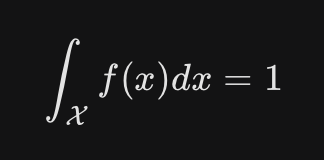

La estadística es una ciencia que se encarga de la recolección, organización, análisis e interpretación de datos para obtener conclusiones sobre un conjunto de individuos o eventos. Se utiliza en diversos campos como la investigación científica, la economía, la medicina, la ingeniería y las ciencias sociales.
La teoría de decisión es una rama de la estadística que se enfoca en tomar decisiones óptimas frente a la incertidumbre. Se utiliza para evaluar diferentes opciones y elegir la que tiene la mayor probabilidad de éxito, considerando los riesgos y beneficios asociados a cada una.
La población es el conjunto completo de individuos o eventos que queremos estudiar. Es un grupo finito o infinito que tiene características comunes que nos interesan.
Una muestra aleatoria es un subconjunto de la población seleccionado de tal manera que cada individuo tiene la misma probabilidad de ser elegido. Se utiliza para obtener información sobre la población sin tener que estudiar a todos los individuos.
Los parámetros aleatorios son características desconocidas de la población que se estiman a partir de una muestra. Se representan con letras griegas, como μ para la media y σ para la desviación estándar.
Los datos agrupados son aquellos que se presentan en intervalos o clases. Se utilizan cuando se tienen muchos datos o cuando los datos no son precisos.
Los datos no agrupados son aquellos que se presentan en su valor individual. Se utilizan cuando se tienen pocos datos o cuando los datos son precisos.
La frecuencia de clase es el número de individuos que caen en un intervalo o clase.
La frecuencia relativa es la proporción de individuos que caen en un intervalo o clase. Se calcula dividiendo la frecuencia de clase por el tamaño total de la muestra.
El punto medio es el valor promedio de un intervalo o clase. Se calcula sumando los límites inferior y superior del intervalo y dividiendo por dos.
Los límites son los valores que definen un intervalo o clase. El límite inferior es el valor más pequeño del intervalo, mientras que el límite superior es el valor más grande del intervalo.
La media aritmética es la suma de todos los valores de una muestra dividida por el tamaño de la muestra. Se representa con la letra μ o X̅.
La media geométrica es el n-ésimo raíz del producto de todos los valores de una muestra. Se representa con la letra G.
La media ponderada es la suma de los productos de cada valor de una muestra por su peso correspondiente dividida por la suma de los pesos. Se utiliza cuando los datos tienen diferente importancia.
La mediana es el valor que divide a la muestra ordenada en dos partes de igual tamaño. Se representa con la letra M.
La moda es el valor que aparece con mayor frecuencia en una muestra. Se representa con la letra Mo.
Las medidas de dispersión indican qué tan dispersos están los datos alrededor de la medida de tendencia central. Las medidas de dispersión más comunes son la varianza, la desviación estándar, la desviación media y la desviación mediana.
La varianza es el promedio del cuadrado de las desviaciones de cada valor de la muestra respecto a la media. Se representa con la letra σ^2.
La desviación estándar es la raíz cuadrada de la varianza. Se representa con la letra σ.
La desviación media es el promedio de las distancias absolutas de cada valor de la muestra respecto a la media.
La desviación mediana es la mediana de las distancias absolutas de cada valor de la muestra respecto a la mediana.
El rango es la diferencia entre el valor máximo y el valor mínimo de una muestra.
La media muestral agrupada se calcula utilizando la siguiente fórmula:
Media muestral agrupada = Σ(fi * xi) / Σfi
Donde:
La mediana muestral agrupada se calcula dividiendo la población en dos partes iguales y luego identificando la clase en la que cae la mediana. La mediana muestral agrupada se calcula utilizando la siguiente fórmula:
Mediana muestral agrupada = límite inferior de la clase + (h(N/2 - Σfi) / fi)
Donde:
La moda muestral agrupada es la clase que tiene la mayor frecuencia.
Una distribución de frecuencias es una tabla que muestra la distribución de los valores de un conjunto de datos en clases o intervalos. La distribución de frecuencias incluye la frecuencia de cada clase, la frecuencia relativa de cada clase y el porcentaje de cada clase.
La agrupación de datos es el proceso de dividir un conjunto de datos en clases o intervalos. La elección del número y el ancho de las clases es importante para obtener una buena representación de los datos.
El muestreo es el proceso de seleccionar un subconjunto de la población para estudiar las características de toda la población. El objetivo del muestreo es obtener una muestra representativa de la población, es decir, una muestra que refleje las características de la población en general.
La elección del tipo de muestreo adecuado dependerá del tamaño y la estructura de la población, del propósito del estudio y de los recursos disponibles.
Un histograma es una representación gráfica de la distribución de frecuencias de un conjunto de datos. Se construye utilizando barras rectangulares, donde la altura de cada barra es proporcional a la frecuencia de la clase correspondiente. A continuación un ejemplo:
Los histogramas se pueden utilizar para interpretar la distribución de los datos. Por ejemplo, un histograma simétrico indica que los datos están distribuidos uniformemente alrededor de la media. Un histograma asimétrico a la derecha indica que los datos están concentrados en la parte izquierda del gráfico, mientras que un histograma asimétrico a la izquierda indica que los datos están concentrados en la parte derecha del gráfico. Un histograma con dos o más picos indica que los datos son multimodales.
Los histogramas son una herramienta útil para explorar y visualizar datos. Se pueden utilizar para identificar patrones, tendencias y anomalías en los datos.
Las técnicas de conteo son herramientas matemáticas que permiten determinar el número de resultados posibles en situaciones que involucran la elección o disposición de elementos. Estas técnicas son fundamentales en áreas como la probabilidad, la estadística y la combinatoria.
El principio aditivo establece que si hay n maneras de realizar una acción y m maneras de realizar otra acción, entonces hay n + m maneras de realizar ambas acciones de forma independiente. En otras palabras, si A y B son eventos disjuntos (no pueden ocurrir al mismo tiempo), entonces la probabilidad de que ocurra A o B es la suma de sus probabilidades individuales:
P(A o B) = P(A) + P(B)
Ejemplo: Supongamos que una persona debe elegir entre dos restaurantes para cenar: un restaurante italiano y un restaurante chino. Si hay 5 opciones de platos en el restaurante italiano y 7 opciones de platos en el restaurante chino, ¿cuántas opciones de plato tiene la persona en total?
Solución: Aplicando el principio aditivo, la persona tiene 5 + 7 = 12 opciones de plato en total.
El principio multiplicativo establece que si hay n maneras de realizar una acción y luego hay m maneras de realizar otra acción dependiente de la primera, entonces hay n * m maneras de realizar ambas acciones en conjunto. En otras palabras, si A y B son eventos dependientes (la ocurrencia de uno afecta la probabilidad del otro), entonces la probabilidad de que ocurran A y B es la probabilidad de A multiplicada por la probabilidad de B dado que A ya ha ocurrido:
P(A y B) = P(A) * P(B | A)
La notación factorial se utiliza para representar el producto de una secuencia de números enteros positivos consecutivos. El factorial de n, que se denota como n!, se define como:
n! = n * (n - 1) * (n - 2) * ... * 2 * 1
Por ejemplo, 5! = 5 * 4 * 3 * 2 * 1 = 120.
La notación factorial es especialmente útil en el contexto de las permutaciones y combinaciones.
La permutación es una técnica de conteo que permite calcular las posibles ordenaciones de los elementos de un conjunto o número de elementos del espacio muestral de un experimento aleatorio. En esta técnica de conteo se considera que existe el orden en la muestra, pero no es posible repetir ningún elemento de la población en su conformación. Se puede calcular utilizando la siguiente fórmula:
nPr=(n!)/(n-r)!
Una combinación es una selección de k elementos de un conjunto de n elementos, sin importar el orden en que se seleccionen. El número de combinaciones de n elementos tomados de k en k se denota como nCk y se puede calcular utilizando la siguiente fórmula:
nCk = n! / (k! * (n - k)!)
Un diagrama de árbol es una herramienta visual que se utiliza para representar las diferentes posibilidades en situaciones que involucran decisiones sucesivas. Cada rama del árbol representa una elección, y las probabilidades se pueden asignar a cada rama.
El Teorema del Binomio, también conocido como Binomio de Newton, es una fórmula matemática que describe cómo se expande la potencia "n" de un binomio (una expresión con dos términos). La fórmula se expresa como:
(a + b)^n = Σ(k=0; n) (nCk) * a^(n-k) * b^k
Donde:
La teoría elemental de la probabilidad se basa en conceptos básicos para cuantificar la probabilidad de que ocurra un evento en un experimento aleatorio. Se define la probabilidad de un evento "A" como la razón entre el número de resultados favorables a "A" y el número total de resultados posibles en el espacio muestral. Matemáticamente, se expresa como:
P(A) = n(A) / n(S)
Donde:
El espacio muestral, denotado por Ω, es el conjunto que contiene todos los resultados posibles de un experimento aleatorio. En otras palabras, es la colección completa de todos los eventos que pueden ocurrir. Cada resultado en el espacio muestral se llama evento elemental.
Ejemplo: Si lanzamos una moneda, el espacio muestral Ω sería {cara, cruz}.
Un evento es un subconjunto del espacio muestral. Es un conjunto de resultados posibles que nos interesa considerar. Puede ser un solo resultado elemental o una combinación de ellos.
Ejemplo: Si lanzamos una moneda, el evento "obtener cara" sería {cara}.
Un diagrama de Venn es una representación gráfica de dos o más eventos. Los eventos se representan por círculos o regiones, y la superposición de las regiones indica la intersección de los eventos.
Los axiomas de la probabilidad son principios básicos que definen las propiedades de la probabilidad. Los tres axiomas principales son:
Existen varios teoremas importantes en probabilidad con técnicas de conteo, como:
Dos eventos A y B se consideran dependientes si la probabilidad de uno afecta la probabilidad del otro. En otras palabras, si saber que ha ocurrido A cambia la probabilidad de que ocurra B. Ejemplo: Sacar dos cartas de una baraja sin reponer. La probabilidad de sacar un rey en la segunda carta depende de si el rey se sacó en la primera carta.
Dos eventos A y B se consideran independientes si la probabilidad de uno no afecta la probabilidad del otro. En otras palabras, saber que ha ocurrido A no cambia la probabilidad de que ocurra B. Ejemplo: Lanzar dos monedas. La probabilidad de obtener cara en la segunda moneda es la misma independientemente de si se obtuvo cara o cruz en la primera moneda.
La ley multiplicativa establece que la probabilidad de que ocurran dos eventos independientes A y B es el producto de sus probabilidades individuales:
P(A ∩ B) = P(A) * P(B)
La regla de Bayes es un teorema que permite calcular la probabilidad condicional de un evento A sabiendo que ha ocurrido otro evento B, cuando los eventos son independientes. Se expresa como:
P(A | B) = (P(B | A) * P(A)) / P(B)
Las variables aleatorias discretas son aquellas en que el número de valores posibles que toman es finito o infinito, pero que puede numerarse
Una variable aleatoria discreta X se define por su función de probabilidad, P(x), que asigna a cada valor posible x de X una probabilidad P(x)≥0, de tal manera que ∑ x∈X P(x)=1, donde X es el conjunto de valores posibles de X.
La función de probabilidad P(x) puede representarse mediante una tabla de frecuencias o una gráfica de barras.
La media o valor esperado es una medida de localización central de la variable aleatoria. Se calcula de la manera siguiente:

es decir, es un promedio ponderado de los valores que toma la variable aleatoria (Xi ), donde las ponderaciones (o pesos) son las probabilidades [P(Xi )].
La varianza y la desviación estándar son medidas de dispersión o variabilidad de la variable aleatoria. La primera se calcula de la siguiente manera:

En otras palabras, es el promedio ponderado de las distancias al cuadrado de cada valor de la variable aleatoria respecto a su media. Esto indica cuán alejados están los valores en relación con la media. Se eleva al cuadrado para hacer más evidente esa distancia (variabilidad). También puede calcularse así:
Como el resultado de la varianza se expresa en unidades al cuadrado, determinamos la desviación estándar calculando sólo la raíz cuadrada de la varianza.
a función acumulada de una variable aleatoria discreta representa la probabilidad de que la variable tome un valor menor o igual a un valor específico x. Se define como:
La función acumulada es una función no decreciente que va de 0 a 1.
En estadística, una variable aleatoria continua es aquella que puede tomar infinitos valores dentro de un intervalo real. A diferencia de las variables aleatorias discretas, que solo pueden tomar valores específicos, las variables continuas pueden tomar cualquier valor dentro de un rango definido
Las variables aleatorias continuas se caracterizan por tener un conjunto infinito no numerable de valores posibles dentro de un intervalo. Su distribución de probabilidad se define mediante una función de densidad de probabilidad, f(x), que asigna a cada valor x en el intervalo de valores posibles X una densidad de probabilidad f(x)≥0, cumpliendo la condición de que la integral de la densidad de probabilidad en todo el intervalo sea igual a 1:
Es una medida de localización central de la variable aleatoria. Se calcula de la forma siguiente:

Son medidas de dispersión o variabilidad de la variable aleatoria. Se calculan de esta manera:

Cabe recordar que la varianza también puede calcularse así:

De este modo determinamos la desviación estándar calculando únicamente la raíz cuadrada de la varianza.
La función acumulada de una variable aleatoria continua representa la probabilidad de que la variable tome un valor menor o igual a un valor específico x. Se define como:

La función acumulada es una función no decreciente que va de 0 a 1.
Para calcular probabilidades relacionadas con una variable aleatoria continua, se utiliza la función acumulada. Por ejemplo, para calcular la probabilidad de que la variable aleatoria X tome un valor entre a y b, se utiliza la siguiente fórmula:
En el ámbito de la probabilidad y la estadística, las distribuciones de probabilidad desempeñan un papel fundamental para modelar el comportamiento de variables aleatorias en diversos contextos. Estas distribuciones permiten cuantificar la probabilidad de que una variable aleatoria tome un valor específico o se encuentre dentro de un intervalo particular. A continuación, se presenta una descripción más detallada de algunas de las distribuciones de probabilidad más comunes, adoptando un estilo técnico y formal:
La función de probabilidad es una función matemática que asigna a cada valor posible de una variable aleatoria X su probabilidad de ocurrencia. Se representa con la notación P(X = x) o f(x) para una variable discreta, y con F(x) para una variable continua. La función de probabilidad debe cumplir las siguientes propiedades:
La función de probabilidad es fundamental para calcular probabilidades de eventos relacionados con la variable aleatoria X.
La distribución binomial describe la probabilidad de obtener un número específico de "éxitos" en n experimentos independientes, donde cada experimento tiene la misma probabilidad de éxito p. Se utiliza cuando:
La función de probabilidad de la distribución binomial para X = k éxitos en n experimentos es:
P(X = k) = nCk * p^k * (1-p)^(n-k)
Donde:
La distribución hipergeométrica describe la probabilidad de obtener un número específico de "éxitos" en n experimentos sin reemplazo, donde la población inicial tiene N elementos, de los cuales K son éxitos. Se utiliza cuando:
La función de probabilidad de la distribución hipergeométrica para X = k éxitos en una muestra de n elementos es:
P(X = k) = (K choose k) * (N-K choose n-k) / (N choose n)
La distribución de Poisson describe la probabilidad de observar un número específico de eventos en un intervalo de tiempo fijo, suponiendo que los eventos ocurren de forma independiente y con una tasa constante. Se utiliza cuando:
La función de probabilidad de la distribución de Poisson para X = k eventos en un intervalo de tiempo con tasa λ es:
P(X = k) = (e^(-λ) * λ^k) / k!
La distribución normal, también conocida como distribución gaussiana, describe la probabilidad de que una variable aleatoria continua X tome un valor dentro de un intervalo específico. Se caracteriza por su media (μ) y su desviación estándar (σ).
Propiedades:
Aplicaciones:
Ejemplo: Medir la altura de 100 estudiantes y analizar si la distribución de las alturas se ajusta a una distribución normal.
La distribución t-student es similar a la distribución normal, pero se utiliza cuando el tamaño de la muestra es pequeño y la desviación estándar poblacional (σ) es desconocida. Se caracteriza por su grados de libertad (ν) y un parámetro de ubicación (μ).
Propiedades:
Aplicaciones:
Ejemplo: Comparar la media de las calificaciones en matemáticas de dos grupos de estudiantes con tamaños de muestra pequeños.
La distribución chi-cuadrada (χ²) se utiliza para analizar la independencia entre dos variables categóricas. Se caracteriza por sus grados de libertad (ν).
Propiedades:
Aplicaciones:
Ejemplo:Analizar si existe relación entre el color de ojos y la preferencia por un tipo de música en un grupo de personas.
La distribución F se utiliza para comparar dos varianzas poblacionales. Se caracteriza por sus dos grados de libertad (ν1 y ν2).
Propiedades:
Aplicaciones:
Ejemplo:Comparar la variabilidad en las calificaciones de matemáticas de dos grupos de estudiantes que recibieron diferentes métodos de enseñanza.